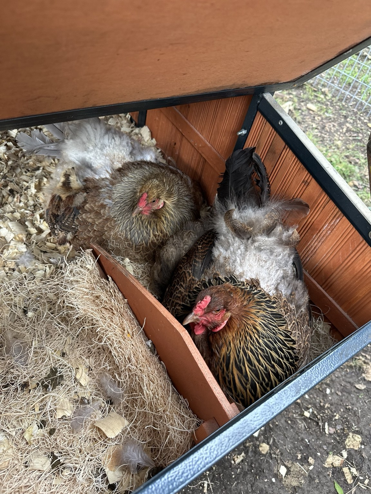
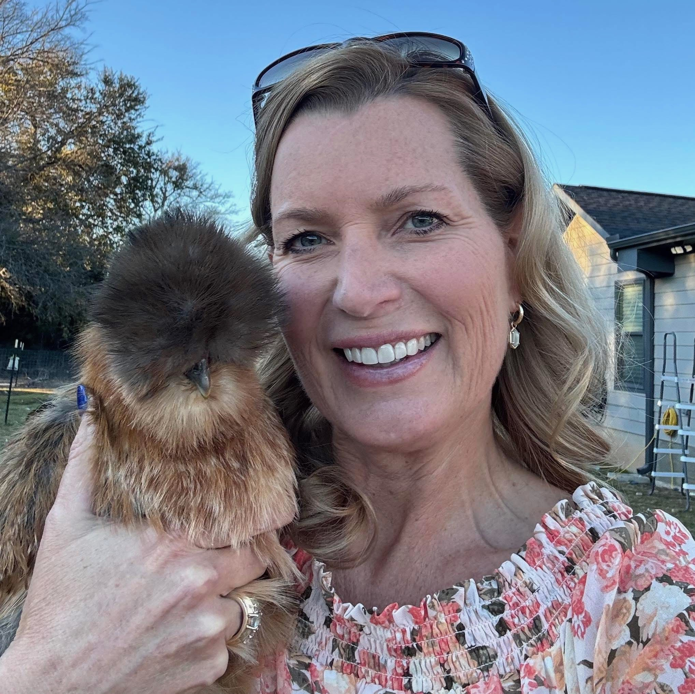
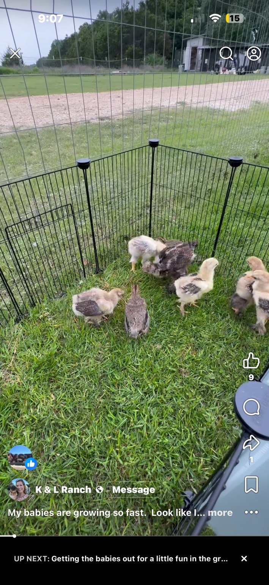

Farm-Fresh Eggs
Eggs gathered from our flock. Availability can vary throughout the year, so contact us for what is currently available.
Contact us for availability & pricing
Farm-fresh eggs and chickens raised with hands-on care, from our family ranch to yours.
Eggs • Chickens • Family Raised

K & L Ranch is a family operation focused on raising chickens and providing farm-fresh eggs to our local community. Our flock is part of everyday life here, from newly hatched chicks to the hens and roosters that call the ranch home.
We believe in keeping things straightforward: care for the birds, keep the flock healthy, and offer quality products from a place we are proud to call home.
Our Story
Eggs gathered from our flock. Availability can vary throughout the year, so contact us for what is currently available.

We raise chickens through different stages, from chicks to mature birds. Contact us to see what we currently have available.